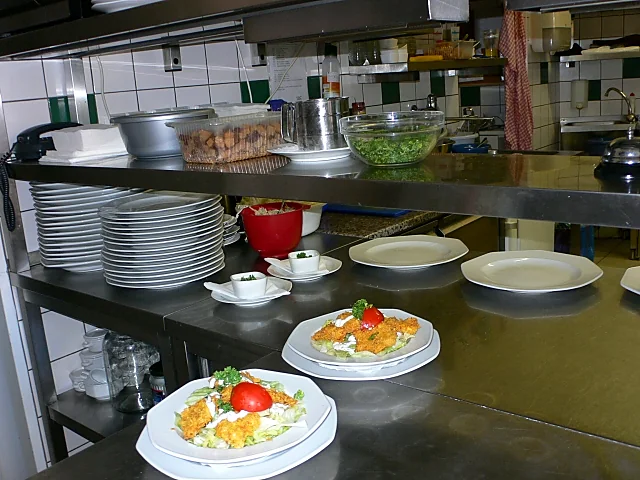
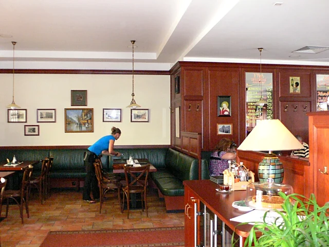
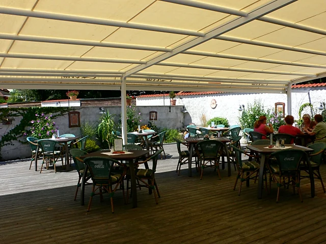

Restaurace
Klidné posezení nedaleko centra Třeboně. Česká klasika, minutky a rybí speciality.
Vaříme tak, jak to má být
Česká klasika, minutky a ryby z třeboňských rybníků. Kdo spěchá, vybere si z denní nabídky hotových jídel.
Místa je dost i na oslavu, promoci nebo firemní setkání. Termín domluvíme po telefonu.



Bar, kde má pivo správnou pěnu
Bernard ve světlé jedenáctce, nefiltrované i polotmavé dvanáctce a třeboňský Regent. K tomu vína, rumy, whisky a lahvové speciály, které se během roku obměňují.

Zahrádka ve stínu pergoly
Klidný dvorek s dřevěnou terasou, květinami a stínící markýzou.
- Zastřešená terasa, posedíte i za deště
- Dětský koutek s domečkem přímo na terase
- Uvnitř i venku platí stejný lístek